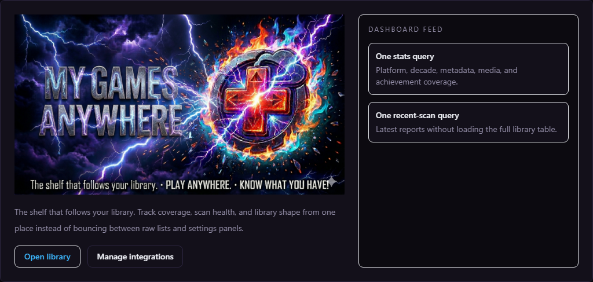
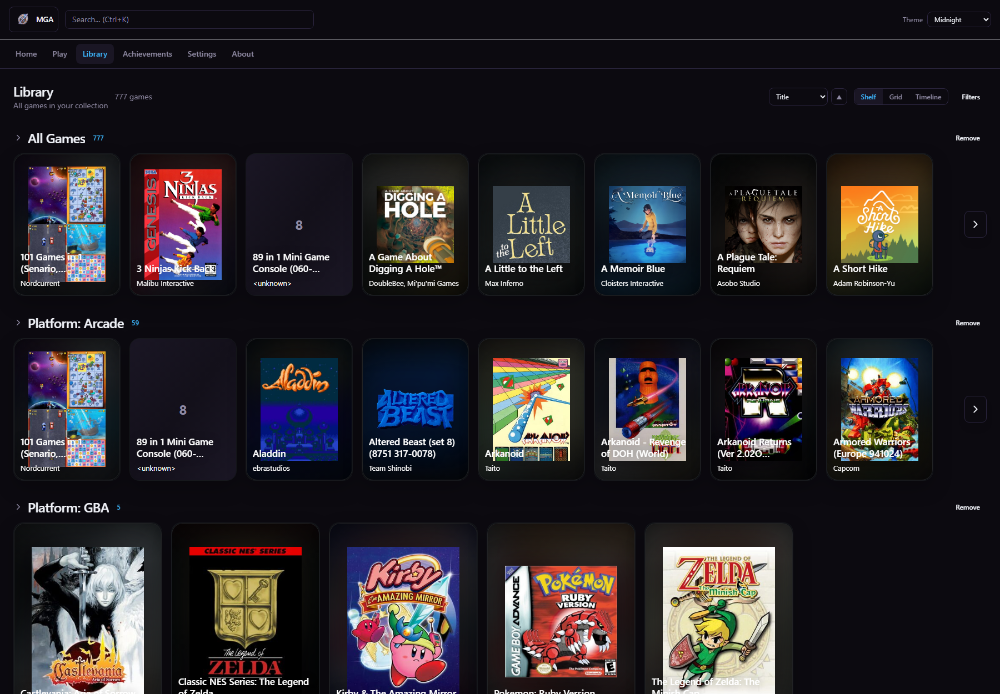
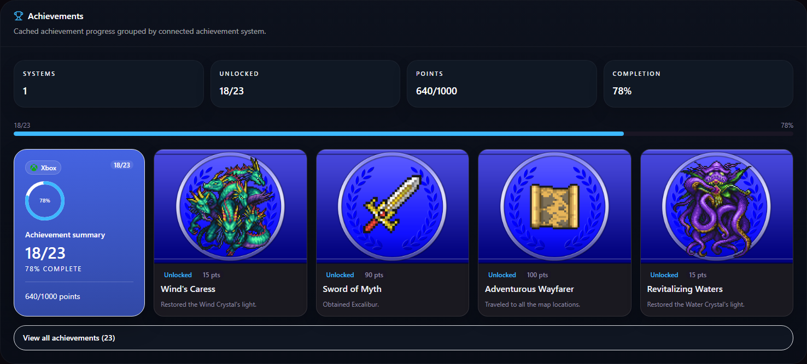
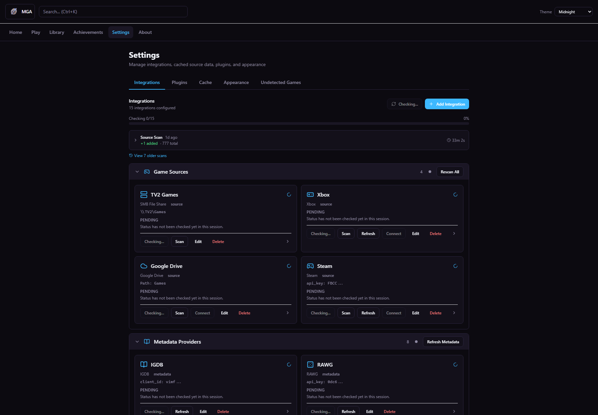

Canonical merge
See one game instead of a pile of duplicate launcher rows from different sources.

Pre-1.0 preview. Windows portable build available now.
MGA scans the sources you choose, merges duplicate entries into one canonical game, enriches them with metadata and media, and gives you one place to see what you own, what you can play, and where it actually lives.
Start MGA.cmd.http://127.0.0.1:8080.The current packaged release is a Windows portable build and runs locally on 127.0.0.1 by default.




See one game instead of a pile of duplicate launcher rows from different sources.
Your config, media, and database stay on your machine unless you choose to sync them.
ROMs, emulators, cloud catalogs, storefront installs, removable drives, and SMB shares belong in the same library.
When detection fails, MGA exposes the problem and gives you tools to fix it instead of hiding it.
| Capability | MGA | Typical store launcher |
|---|---|---|
| Merge the same game across multiple sources | Yes | Usually no |
| Works with ROMs and emulators | Yes | Usually no |
| Detects games on network shares and removable drives | Yes | Rare |
| Local-first data ownership | Yes | Often no |
| Manual review when detection fails | Yes | Rare |
| Integration | What MGA uses it for | Notes |
|---|---|---|
| Steam | Game source, metadata lookup, achievements | Steam Web API key for source and achievements |
| Xbox / PC Game Pass | Xbox library source, Game Pass / xCloud availability, achievements | OAuth-backed source and achievement flow |
| Epic Games | Epic library source | Source listing |
| Google Drive | Drive-backed game source, file operations, save sync, settings sync | OAuth-backed; source config supports include paths |
| SMB / network shares | Network-share game source and filesystem operations | Host/share credentials and include paths |
| Local disk | Local save-sync target | No external service required |
| LaunchBox | Game metadata lookup, platform-aware matching, media enrichment | Bundled metadata provider |
| IGDB | Game metadata lookup and enrichment | Twitch/IGDB client ID and secret |
| RAWG | Game metadata lookup and enrichment | RAWG API key |
| GOG | GOG metadata lookup | Metadata provider |
| HLTB | HowLongToBeat metadata lookup | Metadata provider |
| MAME DAT | Arcade/MAME metadata lookup | Metadata provider |
| RetroAchievements | RetroAchievements metadata lookup and achievements | API key and username |